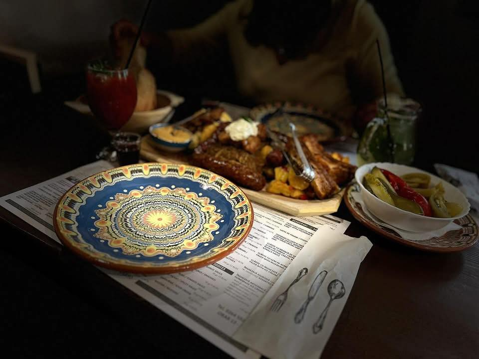

Din 1998 în Cluj-Napoca
Gustul
Ardelenesc
Autentic
Sarmale aburinde, Varză à la Cluj și papanași ca la bunica acasă. O întoarcere la rădăcini, în inima Transilvaniei.

restaurant
O Poveste Despre Tradiție
"La Roata, timpul curge altfel. Aici nu mâncăm pe fugă. Aici ne așezăm la masă, rupem pâinea caldă și ne bucurăm de o ciorbă de burtă dreasă bine sau de un ciolan afumat care cade singur de pe os."